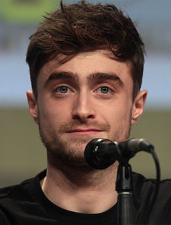

Де́нієл Дже́йкоб Ре́дкліфф (англ. Daniel Jacob Radcliffe, нар. 23 липня 1989, Фулем, Лондон) — британський актор театру та кіно. Виконавець ролі Гаррі Поттера у фільмах за мотивами серії романів англійської письменниці Джоан Роулінг. У 2009 році був занесений в Книгу рекордів Гіннеса як найбільш високооплачуваний актор десятиліття. Отримав іменну зірку на голлівудській Алеї слави в Каліфорнії за внесок в кіномистецтво.
Денієл Редкліфф народився в лондонському районі Фулхем. Його батьки, літературний агент Алан Редкліфф та телевізійний директор з кастингу Марсія Грешем, не були у захваті від того, що син вже в п'ятирічному віці почав цікавитись професією актора. Одного разу Денієл вийшов на сцену в костюмі мавпочки — це був перший й останній раз, коли він взяв участь у шкільній постановці. В одному з інтерв'ю актор зізнався, що дуже боїться, що коли-небудь на телебачення потрапить відеокасета з його «дебютом» і йому доведеться ховати очі від сорому. Поки Денієл знімався у шпигунському трилері «Кравець з Панами» (2001), де виконував роль сина героїв Джеффрі Раша та Джеймі Лі Кертіс, в Англії почався тривалий і складний пошук юних талантів для екранізації найпопулярнішої у світі сучасної дитячої книги. Режисер Кріс Коламбус, переглянувши «Девіда Копперфілда», попросив свого асистента з кастингу запросити юного актора на прослуховування. Це сталося після дев'яти місяців безплідних пошуків, коли переглянули понад 16 тисяч претендентів, а до початку зйомок лишалося два місяці. «Якщо чесно, ми вже думали, що доведеться знімати „Гаррі Поттер і філософський камінь“ без Гаррі», — жартував продюсер Девід Гейман. Батьки Денієла відмовилися від запрошення, щоб захистити сина від руйнування даремних надій. Проте Алан Редкліфф виявився давнім знайомим Геймана. Зустрівши Редкліффів у театрі, на виставі «Каміння в його кишенях», продюсер довго намагався уявити Денієла в ролі Гаррі, а наступного ранку переконав батьків юного актора змінити своє рішення. Авторка книжки Джоан Роулінг була дуже задоволена вибором режисера, і в серпні 2000 р. Денієл отримав роль. Редкліфф каже, що хотів би стати письменником чи режисером. Ще одне його серйозне захоплення — музика: Денієл грає на бас-гітарі і сподівається з часом знайти однодумців, щоб створити групу. 2002 року він дебютував на сцені у виставі Кеннета Брена «П'єса, яку я написав».